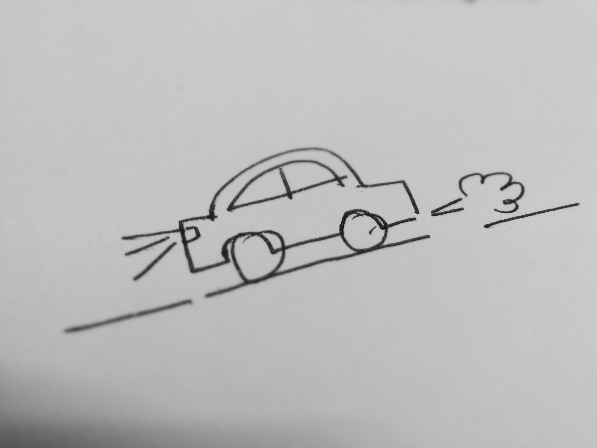

Have you ever tried explaining a complex idea to someone? An Idea that is crystal clear to you but it just doesn't come out as you have it in your mind. This is because everyone listening to you is sketching their own version of your idea in their minds, which might be very different than yours. Different people have different visual languages. The circles in your head maybe squares in someone else's. Now, have you tried explaining an idea with a sketch on a paper or maybe a whiteboard? Everyone is on the exact same page and knows exactly what…